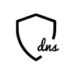

安全与开源
共 156 个站点，按权重排序

RethinkDNS一个开源安卓应用里同时有加密 DNS 和真正按应用区分的防火墙，还不需要账号，这确实少见。拦截库的深度和设备端日志，对想核查应用到底在干什么的人很有吸引力。短板是界面要花时间学，而且 DNS 与防火墙都走 VPN 通道，意味着不能同时和真正的 VPN 并用，除非绕道。愿意投入配置时间的隐私意识安卓用户，用它合适。AliasVault可自托管的零知识密码管理器，内置邮箱别名服务器，端到端加密，AGPLv3 授权。